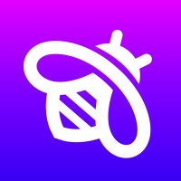
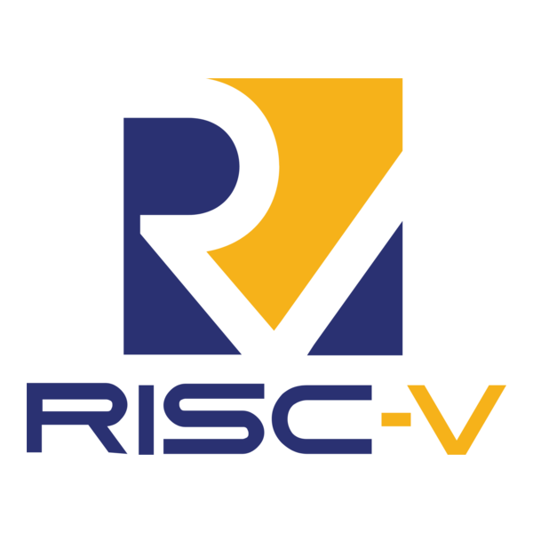

💻 Experience in Full-Stack Development and Tool Creation
During my undergraduate studies, I developed full-stack applications and various software tools. I showcase a full-stack application that was an academic project. I'll also showcase two tools I wrote: one for an academic assignment and one for personal use.
Later this year, I will maintain these projects/tools and host them for you to view! My GitHub repository can be accessed via the footer link labeled Marlon's GitHub. If you'd like to view the source code for this website, please visit this GitHub repository.
💜🐝 Social Media Platform Recreation - Inspired by Fizz
As part of a four-week team project for Database Systems, we developed a full-stack recreation of the social media application Fizz, a social media app designed specifically for college students. It's known for its anonymous posting features and peer moderation system.
Our team of three focused on replicating the core functionalities of the original app: anonymous posting, liking, commenting, blocking users, and tagging posts. We implemented the entire stack of the app, but the emphasis of our efforts was placed on designing and implementing the database to support these features efficiently and securely. The project was built in TypeScript, and we used MySQL and SQL Server Management Studio for our database operations.

⚙️ RISC-V Assembler - Machine Instruction Translation Tool
This project involved the development of a custom assembler that converts RISC-V assembly code into machine code. Created for our Computer Architecture course, the assembler supports the majority of the RISC-V instruction set except the following instructions: AUIPC, CSRRW, CSRRS, CSRRC, ECALL, and EBREAK.
The assembler is designed to recognize both formal and informal register names (e.g., x2 and sp) and includes support for translating a variety of pseudoinstructions. I developed it in Python over a ten-day period.

🐧 kebab2snake - A Handy CLI Tool for Case Conversion
While working in AlmaLinux with Neovim, I developed kebab2snake, a shell tool that converts file and directory names from kebab case (this-is-kebab-case) to snake case (this_is_snake_case). I learned that underscores are generally safer than hyphens. For example, hyphens can be misinterpreted as flags in shell commands or subtraction operations in most programming languages.
This was the first tool I wrote entirely in shell, and I am especially proud of the test coverage I built for it. The tool supports a --silent flag to suppress output and a --max-level flag to control recursion depth when renaming directories.
👉 View the code and test suite on GitHub .